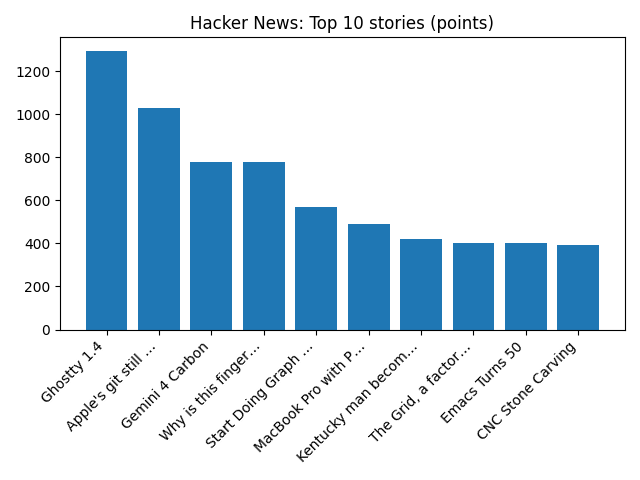

Faisal Islam: This Budget was micro and that was deliberate
BBC — Business
YOUR DAILY INTELLIGENCE BRIEF · 2026-10-29
Global watch: Faisal Islam: This Budget was micro and that was deliberate, EXCLUSIVE: QatarEnergy buys US, other LNG to hedge future Hormuz disruptions - Reuters.
Northern Virginia: Navis Pack & Ship Owners Strengthen Northern Virginia Presence with Operation of Alexandria Location - Yahoo Finance, Publix is coming to Culpeper! New store planned at Dominion Square - WJLA.

Global coverage includes Faisal Islam: This Budget was micro and that was deliberate; EXCLUSIVE: QatarEnergy buys US, other LNG to hedge future Hormuz disruptions - Reuters; Poundland's future hangs in the balance as chain edges towards collapse. Local coverage includes Navis Pack & Ship Owners Strengthen Northern Virginia Presence with Operation of Alexandria Location - Yahoo Finance; Publix is coming to Culpeper! New store planned at Dominion Square - WJLA.

Bethel, Eugene, Oregon
Bethel, also commonly referred to as Bethel-Danebo, is a neighborhood of west Eugene, Oregon, United States. Bethel School District is separate from the main Eugene school district.
https://en.wikipedia.org/wiki/Bethel,_Eugene,_Oregon
Runs so far today: 2